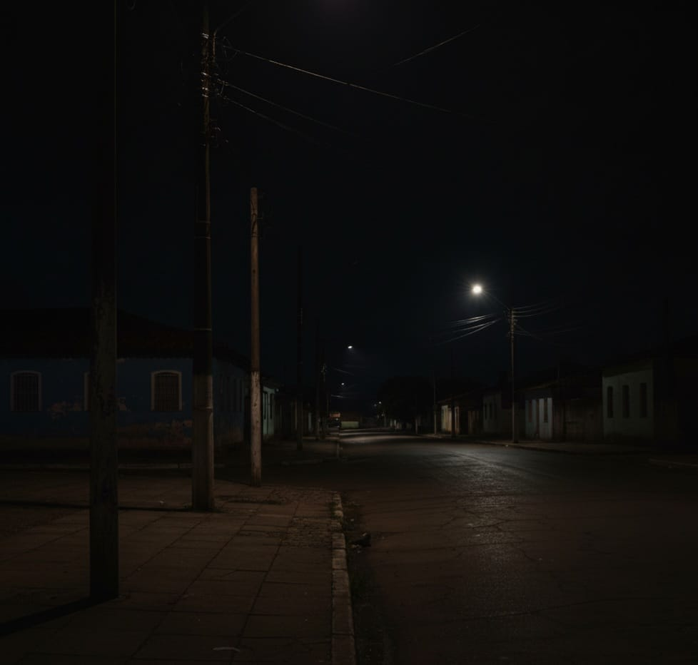

Detalhe da Ocorrência #00101
C1
Cidadão 1
Bairro Tal | Data: 20/09/2025
Sérios problemas de iluminação na Rua B, Postes com lampadas sem funcionar! A situação está perigosa para pedestres à noite. É urgente.

Status Atual: Pendente
Prioridade: Alta
Localização: Rua B, próximo ao número 123
Atualizar Status e Enviar Resposta
Histórico de Ações
25/11/2025 10:30 - Admin: Status alterado para Em Andamento.
Prezado cidadão, sua ocorrência foi registrada e a equipe de manutenção de iluminação já foi notificada. O serviço será iniciado em até 48 horas.
20/09/2025 14:00 - Sistema: Ocorrência criada com status Pendente.